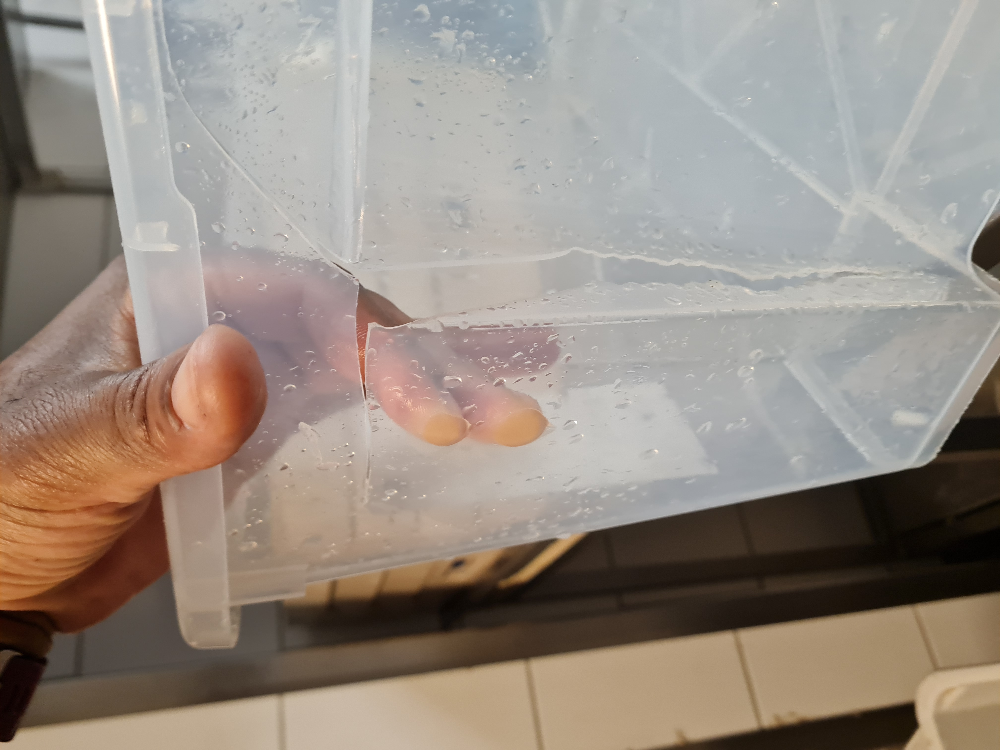

The Inconvenient Hours
A Tactical Journal of Legal Inertia and Employer Neglect in a
High-end Malmö Restaurant.

⚠️ This site is a draft sandbox
This is a live working draft — a sandbox to develop core structural elements: legal narrative grids, ownership timelines, operating principles, and foundational trajectories. These are the internal scaffolding for future articles.
A few early texts may appear here as warm-up material, but the complete version will eventually be published under a different domain and fully optimised for long-form SEO content and strategic legal storytelling.
🗂️ Friday 6 June 2025
- 🗂️ 04:00:22 – 🧹 chore: removed legacy 'notes.html' after migration to structured reference format
- ✍️ 04:00:05 – 📜 content: updated 'structure' with alcohol license details (Rosen Bar), including surface area, seat count, SCC formation, and transition context between Rosenbach and Draining